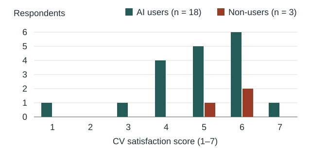
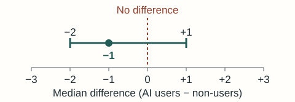
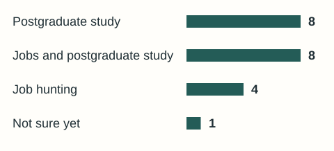

Research question
A CV is often the first document an employer or admissions team sees. Students can use generative AI to organise sections, rewrite experience descriptions or tailor a draft to an opportunity. They can also prepare a CV without AI, drawing on their own experience, templates or feedback from other people. For final-year students at XJTLU, both routes are relevant because the same student may be preparing applications for work, further study or both.
How does satisfaction with a prepared CV differ between students who used AI and those who did not?
We focused on the CV the student ended up with. This puts the outcome in the same terms for both groups, including students who never used an AI tool. The comparison concerns one recalled application document per student. A satisfaction rating captures the student’s judgement of that document. The survey did not independently assess the CV or track application outcomes.
Background and related work
AI in job applications
Wiles et al. found that résumé writing assistance increased hiring in an online labour market [1]. Cui et al. found that an AI cover-letter tool helped applicants tailor their letters and increased callbacks [2].
Those studies track how employers respond. Our study asks how satisfied students are with the CV they prepared.
Student views on AI
Chan and Hu found that students valued AI’s help with writing and learning, while expressing concerns about accuracy and reliance [3]. Davis identified perceived usefulness as a factor in technology acceptance [4]. A tool can feel useful during preparation even if the student has mixed feelings about the finished CV.
AI-assisted writing
Noy and Zhang found faster completion and higher assessed quality on professional writing tasks [5]. Brynjolfsson et al. found productivity gains in customer support that varied with worker experience and skill [6].
In an argumentative writing experiment, Dhillon et al. observed lower perceived ownership and satisfaction even as greater assistance improved some performance measures [7]. The CoAuthor study shows how writers can request, accept, reject or edit AI suggestions [8]. Our yes/no question covers these different ways of using AI.
Students rated their most recent CV. We compared ratings by reported AI use.
Methods
- Confirm eligibilityFinal-year XJTLU students aged 18 or older who prepared a CV in the past six months.
- Recall one CVThink of the most recent CV prepared for a job or postgraduate application.
- Rate satisfactionGive that CV a satisfaction score from 1 to 7 (Q8).
- Report AI useSay whether AI was used to prepare the same CV (Q9).
We grouped respondents by their Q9 answers and compared their Q8 scores.
Design and recruitment
We ran a cross-sectional online survey using Wenjuanxing (WJX). We shared the questionnaire through student groups and used convenience recruitment and peer referrals. To be eligible, a respondent had to be at least 18, in the final year of a degree at XJTLU, and have written or substantially revised a CV for a job or postgraduate application within the previous six months. The survey asked about their most recent CV preparation in that period. Data collection took place from 19 October to 17 November 2026.
The study planning target was 40–60 responses. The final analysis includes 21 eligible responses, below that target. Each person contributed one satisfaction rating. The two groups formed from students’ reported behaviour during CV preparation. The survey did not assign students to use AI, control which tool they used, or prescribe a writing task.
We describe eligibility, recruitment, measurement and potential sources of bias following general reporting guidance for observational studies [9].
Measures and survey procedure
After consent and eligibility screening, the survey asked about application goals, field and prior experience preparing CVs (Q5–Q7). Respondents then rated their overall satisfaction with the recalled CV (Q8). The response scale was 1–7, with 1 meaning very dissatisfied, 4 neither satisfied nor dissatisfied, and 7 very satisfied. Asking for satisfaction before asking about AI use reduced the chance that drawing attention to AI would immediately influence the rating.
Q9 then asked whether the student had used an AI tool to write or edit that same CV. “Yes” defined the AI-user group and “No” the non-user group. The questionnaire offered further questions according to that answer. Non-users were asked why they did not use AI and about possible future use. AI users were asked about the tools they used, the functions they used and their usefulness, perceived overall help, problematic suggestions and future use. The analysis focuses on the satisfaction question shared by both groups.
Ethics
The survey presented study information and asked for consent before eligibility screening. Respondents could leave before submitting. The questionnaire did not ask for a name, student ID or copy of the CV. The course ethics approval reference is ER-LRR-11000011420261012163300. This public report presents group summaries. Individual responses are handled through the course submission channel.
Questionnaire
Participants recalled the last CV they prepared for a job or postgraduate application. Their answer about AI use determined which follow-up questions they saw.
Open questionnaire on WJX Participant information sheet (PDF) Informed consent form (PDF)Data preparation and analysis
-
Select eligible responses
The analysis includes 21 eligible responses with a valid Q8 score.
The analysis uses the 21 records that met the consent and eligibility criteria and had a valid Q8 rating. The analysis file encodes the Q9 yes/no responses as two groups and stores Q8 as an ordered numeric score. All 21 included records had a valid satisfaction score, so no values were imputed. The application and prior-experience responses describe the sample. The routing questions served different purposes within each group and were outside the main comparison.
-
Compare satisfaction by AI use
Q9 defines the groups. Q8 supplies the scores for the Mann–Whitney U test.
We summarised Q8 using counts at each score, medians and quartiles. The scores have a natural order, while the difference between adjacent scores may not mean the same thing to every respondent. We therefore used a two-sided Mann–Whitney U test on two independent groups [10]. The test compares the relative ordering of the scores. Reading it as a direct test of medians would need additional assumptions about the shapes of the distributions.
-
Interpret the test and effect size
We report the two-sided p-value, a rank-based effect size and an interval for the median difference.
We tested at α = .05. The null hypothesis was that the two groups had the same satisfaction distribution. The analysis ranked the pooled scores and used average ranks for ties. The primary p-value was the two-sided, tie-corrected normal approximation with continuity correction. We retained the exact-method value from the analysis output for comparison. The analysis used Python and SciPy [11]. SciPy’s exact method does not adjust its reference distribution for tied scores, which occur often in these data.
We used the rank-biserial correlation to describe the direction and size of the difference in ranks [12]. In the convention used here, positive values favour non-users. We also report a percentile bootstrap interval for the difference in sample medians (AI users minus non-users), using 20,000 resamples within groups. The interval describes uncertainty in the median difference. We used one inferential comparison, so no adjustment for multiple tests was applied.
Results
We found no statistically significant difference in CV satisfaction (Mann–Whitney U = 17.5, two-sided p = .345). With only three non-users, the difference remains uncertain.
CV satisfaction scores

Median difference and uncertainty

Statistical details
| Score | AI users (n = 18) | Non-users (n = 3) |
|---|---|---|
| 1 | 1 | 0 |
| 2 | 0 | 0 |
| 3 | 1 | 0 |
| 4 | 4 | 0 |
| 5 | 5 | 1 |
| 6 | 6 | 2 |
| 7 | 1 | 0 |
Eleven of the 18 AI users rated their CV 5 or 6. The three non-users gave one score of 5 and two scores of 6.
| Group | n | Median | Q1–Q3 | Range |
|---|---|---|---|---|
| AI users | 18 | 5.0 | 4–6 | 1–7 |
| Non-users | 3 | 6.0 | 5–6 | 5–6 |
| Group | n | Mean rank | Sum of ranks |
|---|---|---|---|
| AI users | 18 | 10.47 | 188.5 |
| Non-users | 3 | 14.17 | 42.5 |
Mann–Whitney U test
The two-sided Mann–Whitney U test gave U = 17.5 and an asymptotic p-value of .345. At the stated threshold, the sample does not give clear statistical evidence of a difference. The observed median difference was −1 point, with a 95% bootstrap interval of [−2, 1] points. Differences in either direction remain compatible with that interval.
| Statistic | Result |
|---|---|
| Mann–Whitney U (AI group) | 17.5 |
| Two-sided asymptotic p (primary) | .345 |
| Two-sided exact-method p (as in the analysis output) | .412 |
| Rank-biserial r (positive favours non-users) | +.35 |
| Median difference (AI users minus non-users) | −1 point |
| 95% bootstrap CI for median difference | [−2, 1] points |
Sample

Ten respondents reported preparing one or two previous CVs, and eight reported preparing three or more. Three preferred not to answer.
AI use and perceived help
The main comparison asks how satisfied students were with their CVs. The follow-up questions show what AI users found helpful and what made some students choose to write without it.
AI tools used for CV preparation
ChatGPT was selected most often (10 of 18 AI users), followed by Doubao (7) and DeepSeek (6).
Each respondent could select several tools. The chart counts users who selected each tool, so the totals can exceed 18.
- ChatGPT10/18
- Doubao7/18
- DeepSeek6/18
- Gemini5/18
- Kimi3/18
- Qwen2/18
- Microsoft Copilot1/18
Which CV tasks did students use AI for?
Drafting or expanding experience descriptions was the most commonly rated task (18 of 18). The median usefulness rating for drafting was 5 out of 7. Structure, wording, grammar and formatting, and translation had a median of 6 among respondents who gave valid ratings.
| CV task | Use inferred from a rating | Median usefulness (1–7) | Not used |
|---|---|---|---|
| Draft or expand experience descriptions | 18/18 | 5 | 0 |
| Reword or polish the language | 17/18 | 6 | 1 |
| Tailor the CV to a job or programme | 16/18 | 5.5 | 2 |
| Organise sections or structure | 15/18 | 6 | 2 |
| Check grammar, spelling or formatting | 15/18 | 6 | 3 |
| Translate content | 15/18 | 6 | 3 |
A single rating from 1 to 7 counts as reported use. Medians use valid ratings only. One structure response contained two ratings and was excluded from that row.
Problematic AI suggestions
- Corrected or discarded 10
- Used as suggested 5
- Reported no issue 2
- Unsure 1
Fifteen AI users noticed a problematic suggestion. Five of those users reported keeping it as it was.
The median intention to use AI again was 6 out of 7 (Q16).
Reasons for preparing a CV without AI
- Preferred writing it themselves3/3
- Distrusted AI output2/3
- Had privacy or data protection concerns2/3
- Did not expect AI to improve the CV1/3
All three non-users preferred writing the CV themselves.
When asked about future use, two were neutral (4 out of 7) and one chose 2 out of 7 (Q11).
What the follow-up answers add. Students reported help with drafting and editing, and some accepted suggestions they had already recognised as problematic. This supports teaching students how to check generated CV content. The follow-up questions describe each group’s responses. Q8 and Q9 remain the basis for the satisfaction comparison.
Discussion
Interpreting the results
In this sample, non-users gave somewhat higher ratings, but their group was very small. One response occupies a third of that group and can have a large influence on its median and ranks. The sensible reading is that the survey leaves the direction and size of the difference uncertain. Students in both groups rated their CVs above the neutral point at the median, while the AI users’ answers covered a wider range.
Possible explanations
There are several ways the observed pattern could arise. Students who expect a difficult application might turn to AI more often and judge the finished CV against a different standard. A student with more experience might choose to work independently and feel more confident about the result. Respondents reported using several tools across different CV tasks, from editing sentences to generating material. The grouping combines these uses, so the comparison cannot isolate the contribution of any particular tool or feature.
Limitations
Recruitment through student networks means the observed share of AI users describes this sample. It does not estimate AI adoption among all XJTLU students. The sample was smaller than planned and had only three non-users. That limits precision and makes it hard to assess whether the two groups have similarly shaped distributions. The two-sided test gives evidence about the observed ratings under its assumptions, while the small sample limits what can be inferred beyond those ratings.
We also relied on memory and a single overall rating. Students may remember a recent revision or the role of AI differently, and they may use the scale in different ways. The study did not collect CV quality scores or application decisions, so those outcomes would need separate measures. Students chose whether to use AI, and the study did not control for application goals, prior writing experience or deadlines. Any group difference would therefore remain observational.
Recommendations and future work
For CV guidance, the result supports keeping the focus on what the student has written and can substantiate. A practical activity would be to ask students to check whether an edited bullet accurately represents their role and evidence, and whether the final wording fits the position. The same review can be applied to drafts with or without AI. This suggestion draws on Q15: five AI users reported keeping a suggestion they had noticed was problematic. The survey did not evaluate the effectiveness of a review exercise.
In a survey of knowledge workers, Lee et al. identified verification as part of the work of using AI outputs [13]. In an AI-assisted decision experiment, Buçinca et al. found that prompts to think independently could reduce overreliance [14]. Amershi et al. also recommend making it easy for users to dismiss or correct AI output [15]. In CV advising, one practical application is to review any suggested achievement, date or figure against the applicant’s own records before keeping it.
For a follow-up comparison, recruiting more non-users would provide a better basis for estimating differences. A study could also distinguish specific types of assistance, such as language editing and drafting, record the application context, and collect independent ratings of CV quality. A planned comparison of comparable tasks with randomised access to assistance would address a different question about causal effects. Satisfaction and independent quality ratings could then be reported side by side.
Conclusion
Among the 21 students surveyed, those who did not use AI reported a median CV satisfaction score of 6 out of 7 (n = 3), compared with 5 out of 7 among those who used AI (n = 18). Scores were more varied in the AI group, and both groups gave ratings of 5 and 6.
The two-sided Mann–Whitney U test found no statistically significant difference between the groups (U = 17.5, p = .345). The 95% bootstrap confidence interval for the median difference (AI users minus non-users) ranged from −2 to 1 points. With only three non-users, the survey gives a clear description of this sample but leaves the direction and size of any wider difference uncertain.
Transparency and references
The questionnaire and participant materials are linked in the methods section. The website files are available in the Group D repository. The aggregate figure is based on the response-frequency table for the analysed sample.
- E. Wiles, Z. T. Munyikwa, and J. J. Horton, “Algorithmic writing assistance on jobseekers’ resumes increases hires,” National Bureau of Economic Research, Working Paper 30886, 2023. doi:10.3386/w30886.
- J. Cui, G. Dias, and J. Ye, “Signaling in the age of AI: Evidence from cover letters,” arXiv:2509.25054, ver. 3, 2026. arXiv:2509.25054v3.
- C. K. Y. Chan and W. Hu, “Students’ voices on generative AI: Perceptions, benefits, and challenges in higher education,” Int. J. Educ. Technol. High. Educ., vol. 20, art. 43, 2023. doi:10.1186/s41239-023-00411-8.
- F. D. Davis, “Perceived usefulness, perceived ease of use, and user acceptance of information technology,” MIS Quart., vol. 13, no. 3, pp. 319–340, 1989. doi:10.2307/249008.
- S. Noy and W. Zhang, “Experimental evidence on the productivity effects of generative artificial intelligence,” Science, vol. 381, no. 6654, pp. 187–192, 2023. doi:10.1126/science.adh2586.
Show all 15 referencesShow fewer references
- E. Brynjolfsson, D. Li, and L. R. Raymond, “Generative AI at work,” Quart. J. Econ., vol. 140, no. 2, pp. 889–942, 2025. doi:10.1093/qje/qjae044.
- P. S. Dhillon, S. Molaei, J. Li, M. Golub, S. Zheng, and L. P. Robert, “Shaping human-AI collaboration: Varied scaffolding levels in co-writing with language models,” in Proc. CHI Conf. Human Factors Comput. Syst., 2024. doi:10.1145/3613904.3642134.
- E. von Elm et al., “The Strengthening the Reporting of Observational Studies in Epidemiology (STROBE) statement: Guidelines for reporting observational studies,” PLoS Med., vol. 4, no. 10, art. e296, 2007. doi:10.1371/journal.pmed.0040296.
- H. B. Mann and D. R. Whitney, “On a test of whether one of two random variables is stochastically larger than the other,” Ann. Math. Stat., vol. 18, no. 1, pp. 50–60, 1947. doi:10.1214/aoms/1177730491.
- SciPy, “mannwhitneyu,” SciPy Reference Guide. Online documentation.
- D. S. Kerby, “The simple difference formula: An approach to teaching nonparametric correlation,” Compr. Psychol., vol. 3, 2014. doi:10.2466/11.IT.3.1.
- H.-P. Lee et al., “The impact of generative AI on critical thinking: Self-reported reductions in cognitive effort and confidence effects from a survey of knowledge workers,” in Proc. CHI Conf. Human Factors Comput. Syst., 2025. doi:10.1145/3706598.3713778.
- Z. Buçinca, M. B. Malaya, and K. Z. Gajos, “To trust or to think: Cognitive forcing functions can reduce overreliance on AI in AI-assisted decision-making,” Proc. ACM Hum.-Comput. Interact., vol. 5, no. CSCW1, art. 188, 2021. doi:10.1145/3449287.
- S. Amershi et al., “Guidelines for human-AI interaction,” in Proc. CHI Conf. Human Factors Comput. Syst., 2019. doi:10.1145/3290605.3300233.